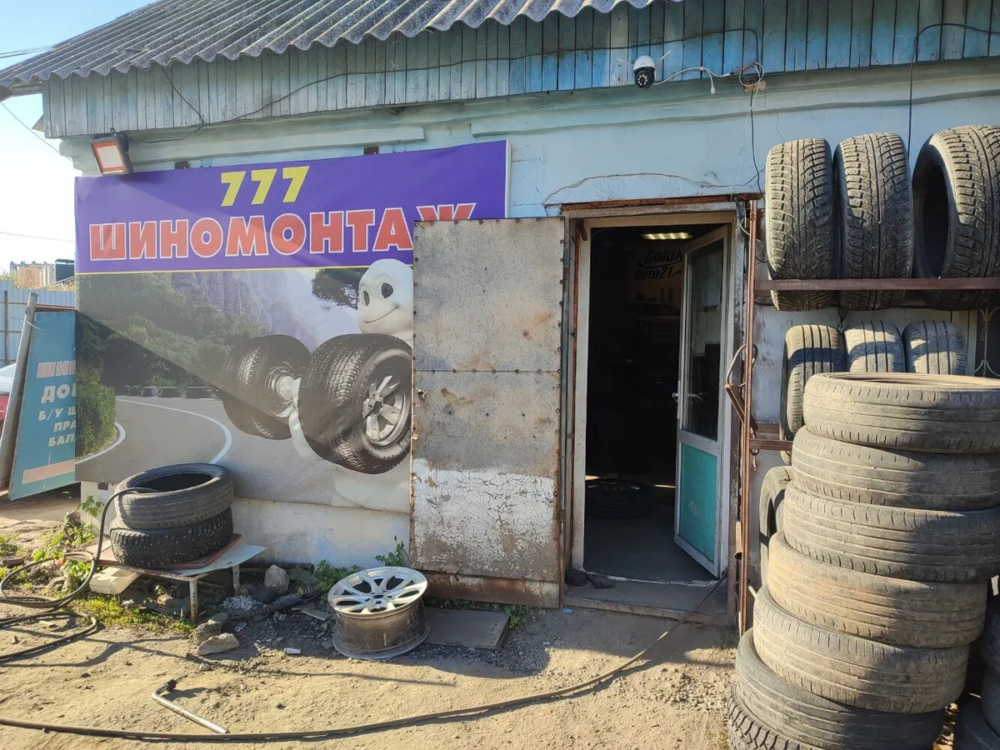
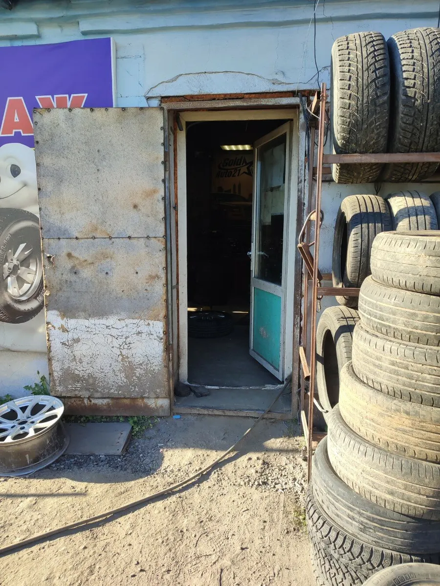
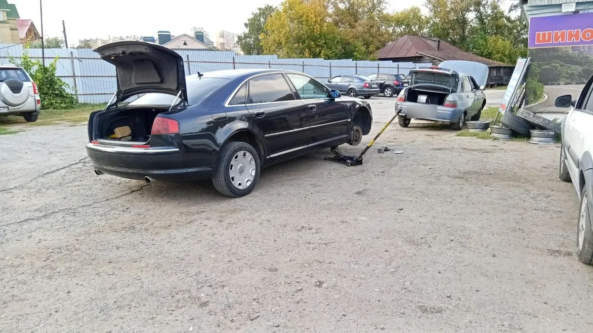
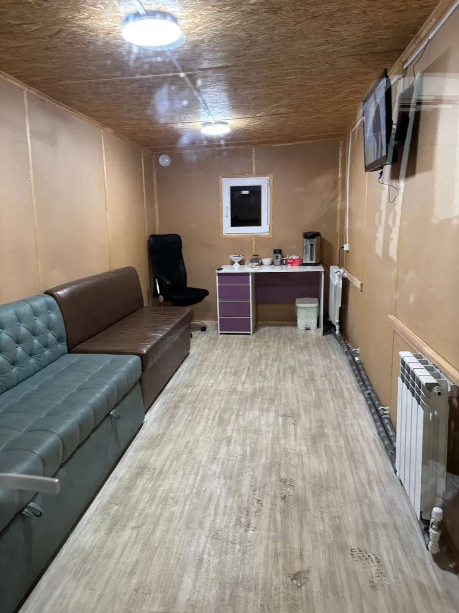

Шиномонтаж · Чебоксары
Шиномонтаж в Чебоксарах – переобуем как на Формуле 1
Так о нас пишут клиенты на Яндекс Картах: рейтинг 5,0 по 331 оценке. Запишитесь по телефону или в WhatsApp, а пока мастера работают, подождите в комнате отдыха.

- 5,0 на Яндекс Картах, 331 оценка
- Шиномонтаж, шины и диски в одном месте
- Комната отдыха с горячими напитками
Цены
Цена переобувки зависит от радиуса дисков. Точную сумму называем при записи.
Переобувка комплекта, легковые
- R13–R14уточнить
- R15–R16уточнить
- R17–R18уточнить
- R19 и большеуточнить
Остальное
- Балансировка колёсуточнить
- Ремонт проколауточнить
- Заправка автокондиционеров2 500 ₽
Цены на переобувку, балансировку и ремонт прокола уточняйте при записи: +7 (937) 951-48-02.
Как проходит
- 01
Выбрали услугу и время
По телефону или в WhatsApp.
- 02
Приехали на Богдана Хмельницкого, 1
Вход рядом со стеллажом с шинами, вывеска «777 Шиномонтаж».
- 03
Мастера переобули колёса
Если нужно, подберут резину и тут же поставят.
- 04
Подождали в комнате отдыха
Горячие напитки, диван и телевизор.



Что пишут клиенты
Шиномонтаж и магазин в одном месте
Из отзыва: «Шины и диски дешевле оказались, чем в других местах где я смотрела».
Хозяева работают сами
Из отзыва: «Сами хозяева этой шинки, сами и работают».
Комната отдыха с горячими напитками
Из отзыва: «Есть комната отдыха с горячими напитками».
Отзывы с Яндекс.Карт
«Приехал на переобувку, ребята работают быстро и слажено, как на Ф1 ), все четко, доволен. Рекомендую. Есть комната отдыха с горячими напитками»
Олег Иванов · 9 ноября 2025
«Ребята просто как на формуле1, работают быстро и качественно, рядом подберут резину по ваш авто, и тут же переобуться можно сразу! Отличные цены и мастера»
Александр Дмитриев · 5 ноября 2025
«Ребята молодцы, знают своё дело! Сами хозяева этой шинки, сами и работают. Всегда качественное и быстрое обслуживание, профессиональные советы и ответы на вопросы.»
Дмитрий К. · 28 октября 2024
Отзывы с карточки на Яндекс.Картах, без правок.
Контакты
- Адрес
- улица Богдана Хмельницкого, 1, Чебоксары
- Часы
- Каждый день 08:00–20:00
- Телефон
- +7 (937) 951-48-02